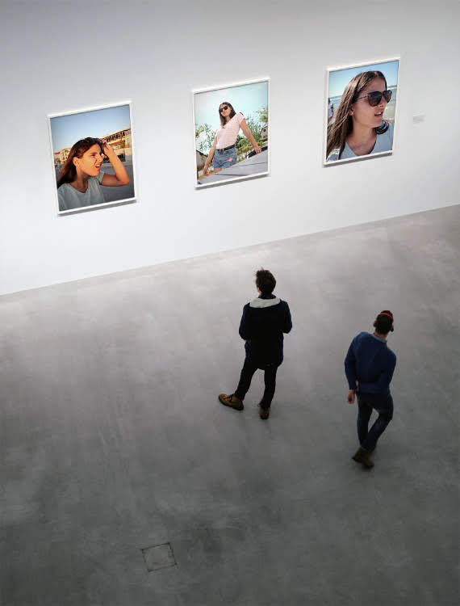
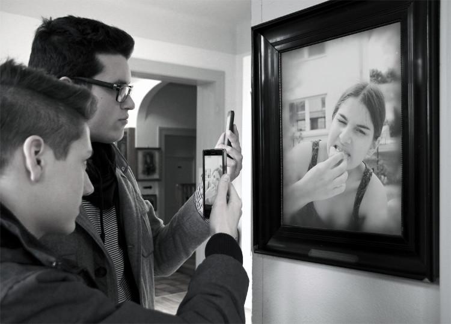

𝘿𝙞𝙚 𝙆𝙪𝙣𝙨𝙩 𝙙𝙚𝙨 𝙎𝙘𝙝𝙢𝙖𝙣𝙙𝙚𝙨
Wer hätte gedacht, dass meine Kunst in Museen zu finden ist. Natürlich jeder! Ich bin ja berühmt. Du fragst dich vielleicht wie es zu diesem Erfolg kommen konnte, doch das wäre wie zu fragen warum Bananen draußen bei 17°C am besten schmecken.

Die Kunst des Schmandes ist eine Inspiration für jeden, außer für die jenigen, die Crème fraîche Schmand bevorzugen. Der Unterschied scheint zwar minimal zu sein, für den Laien vielleicht gar nicht zu erschmecken. Doch genau dieser Unterschied ist es was meine Werke von normalsterblichen Fotografien unterscheidet.

Wie jeder weiß hat Schmand einen milderen und weniger säuerlichen Geschmack als Crème fraîche und einen Fettgehalt von 20-29%, wobei die meisten bei etwa 24% liegen, genau wie meine Werke. Damit meine Kunst in Galerien besser zur Geltung kommt und in dem Glanz erstrahlt, den sie verdient hat, wird jede Fotografie auf einem Papier mit einem Fettgehalt von genau 24% gedruckt.

Man findet meine Werke in wirklich jeder Galerie. Das liegt natürlich nicht daran, dass ich sie dort reingeschmuggelt habe, sondern an meinem Fame. Du denkst dir vielleicht aber Schmandmann Exlusivität ist doch das was Werke besonders macht! Doch dazu kann ich nur aus eigener Erfahrung sagen: Nein. Denn wie viele Künstler kennst du, die in jeder Galerie ausgestellt werden? Ja haha das habe ich mir gedacht...
Meine Kunst genau wie Schmand, eignet sich am besten für Liebhaber von Soßen und Suppen. Also nur für Genießer. Und genau wie Soßen und Suppen, findet man meine Kunst nicht nur in Mueseen, sondern auch in Magazinen.
Mich zu buchen heißt einen weltberühmten Künstler zu dir einzuladen. Das macht meinen Service so einzigartig, denn obwohl ich eine Ikone und ein Vorbild für jeden Fotografen bin, bin ich auch ein einfacher Dienstleister.